Chapter 4 Cell Annotation
4.1 There Is No Ground Truth
We have our clusters. Now what are they?
This is the cell annotation problem, and I want to be upfront: there is no perfect annotation. Unlike clustering, which is purely computational, annotation requires biological knowledge. You’re mapping clusters to cell types, and reasonable people can disagree about the answer.
Why is it so hard? Think about it. What counts as a “cell type” vs a “cell state”? Is an activated CD4 T cell a different type or the same cell doing something different? Biology is continuous – differentiation gradients, activation spectra – but we force discrete labels onto it. You could call a cluster “CD4 T cells” or “naive CD4 T cells” or “CCR7+ CD45RA+ naive CD4 T cells” and all are correct at different granularities. And scRNA-seq is noisy and sparse, so rare markers might drop out even when the cell type is present.
Then there’s the question nobody wants to hear: what if your dataset contains something nobody has seen before? No reference will help you there.
No single annotation method is definitive. Use multiple approaches and validate with marker gene visualization. See the “Annotation” chapter at sc-best-practices.org.
4.1.1 How we’ll approach annotation
There are broadly three strategies, and we’ll use all of them:
Manual annotation – you look at known marker genes and assign identities based on expression patterns. This is the most trustworthy approach because you understand the evidence, but it requires domain knowledge and takes time.
Reference-based annotation – tools like SingleR, clustifyr, and Seurat label transfer compare your cells to pre-annotated reference datasets. Fast and unbiased, but only as good as the reference. They can’t find novel cell types.
Marker-based tools – things like scGate and ProjectTILs use curated marker gene lists to score cell types. Transparent and customizable, but you need good marker databases for your tissue.
My philosophy: start with automated methods for quick exploration, then always validate with manual marker visualization. When methods disagree, investigate manually.
There are over 100 cell annotation tools out there. We focus on three widely-used R tools (SingleR, clustifyr, Seurat label transfer), but there are excellent alternatives in Python (celltypist, scVI, scANVI) and on the web (Azimuth, PanglaoDB). None work perfectly for every dataset.
4.2 Manual Annotation
Before we rely on any automated tool, let’s annotate clusters the old-fashioned way – by looking at known marker genes. This builds biological intuition, and you’ll need it later to validate whatever the automated tools tell you.
4.2.1 Define a marker gene dictionary
Based on literature and domain knowledge, we define marker genes for expected PBMC populations:
library(Seurat)
library(scCustomize)
library(here)
library(dplyr)
# Load our cleaned Seurat object from Chapter 3
obj <- readRDS(here("data/pbmc_seurat_obj.rds"))
obj <- JoinLayers(obj)
# Define marker dictionary for major PBMC populations
markers <- list(
"CD4_T_cells" = c("CD3D", "CD3E", "CD4", "IL7R"),
"CD8_T_cells" = c("CD3D", "CD3E", "CD8A", "CD8B"),
"Naive_T_cells" = c("CCR7", "SELL", "IL7R", "TCF7"),
"Effector_T_cells" = c("GZMB", "PRF1", "NKG7", "GNLY"),
"Regulatory_T_cells" = c("FOXP3", "IL2RA", "CTLA4", "TIGIT"),
"Activated_T_cells" = c("CD69", "IL2RA", "ICOS"),
"Exhausted_T_cells" = c("PDCD1", "LAG3", "HAVCR2", "TIGIT"),
"Proliferating" = c("MKI67", "TOP2A", "STMN1"),
"NK_cells" = c("NKG7", "GNLY", "KLRD1", "NCAM1")
) How do you build a dictionary like this? Literature review (PubMed, review papers), marker databases (PanglaoDB, CellMarker, Human Protein Atlas), previous studies in your tissue, and expert knowledge. If you’re not an immunologist, talk to one.
4.2.2 Visualize markers systematically
A cell type is defined by the intersection of multiple markers, not a single gene. Don’t just check one marker and call it done.
# Create dotplot for all markers
DotPlot(obj, features = unique(unlist(markers)), group.by = "seurat_clusters") +
RotatedAxis() +
labs(title = "Marker Gene Expression by Cluster")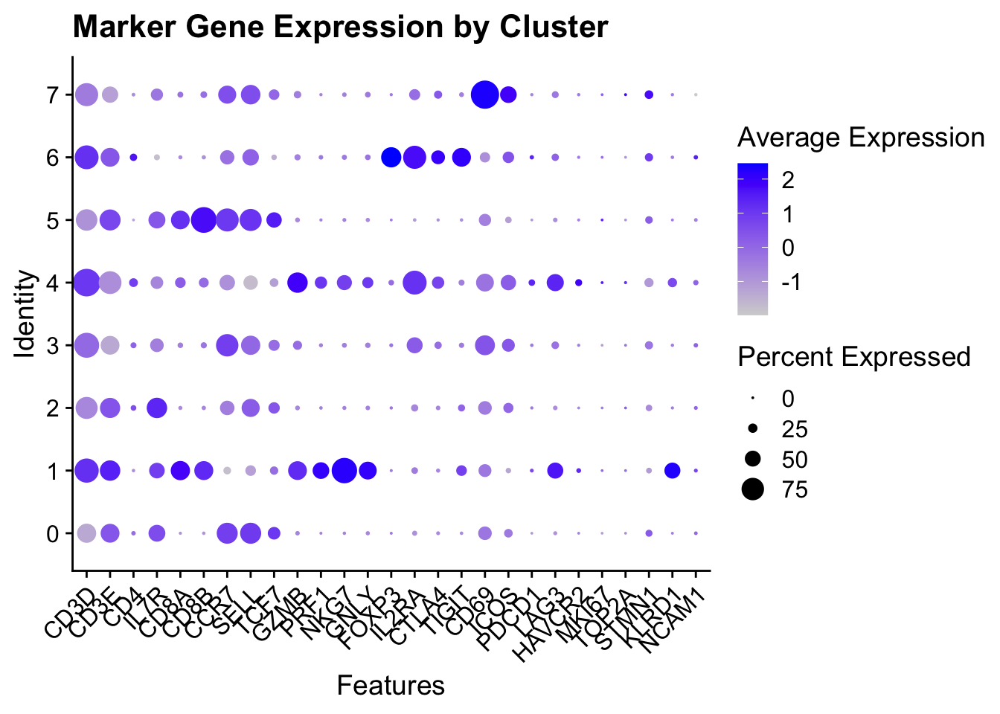
# Alternative: Clustered dotplot (groups similar clusters)
Clustered_DotPlot(obj, features = unlist(markers), plot_km_elbow = FALSE)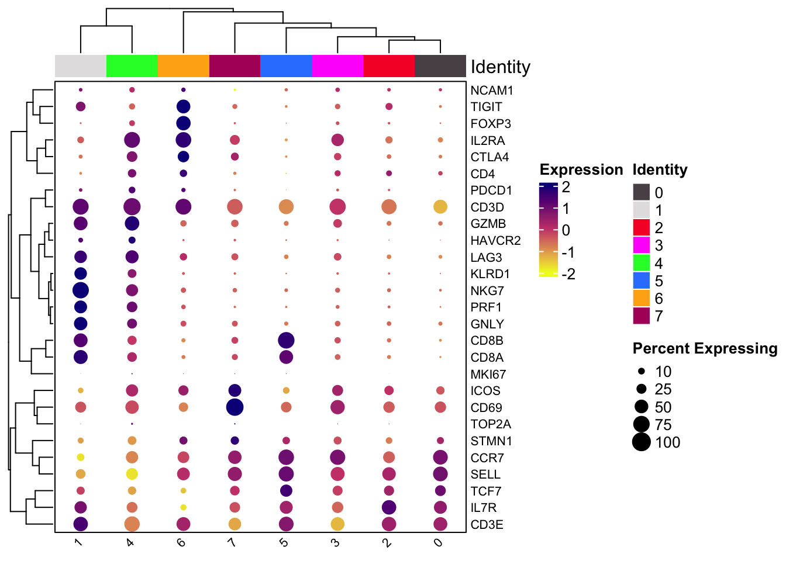
How to interpret: dot size shows the percentage of cells expressing the gene, dot color shows the average expression level. Look for combinations – CD3D+ CD4+ IL7R+ is likely CD4 T cells.
4.2.3 Use feature plots for spatial context
# Visualize key markers on UMAP
FeaturePlot_scCustom(obj, features = c("CD3D", "CD4", "CD8A", "GZMB"))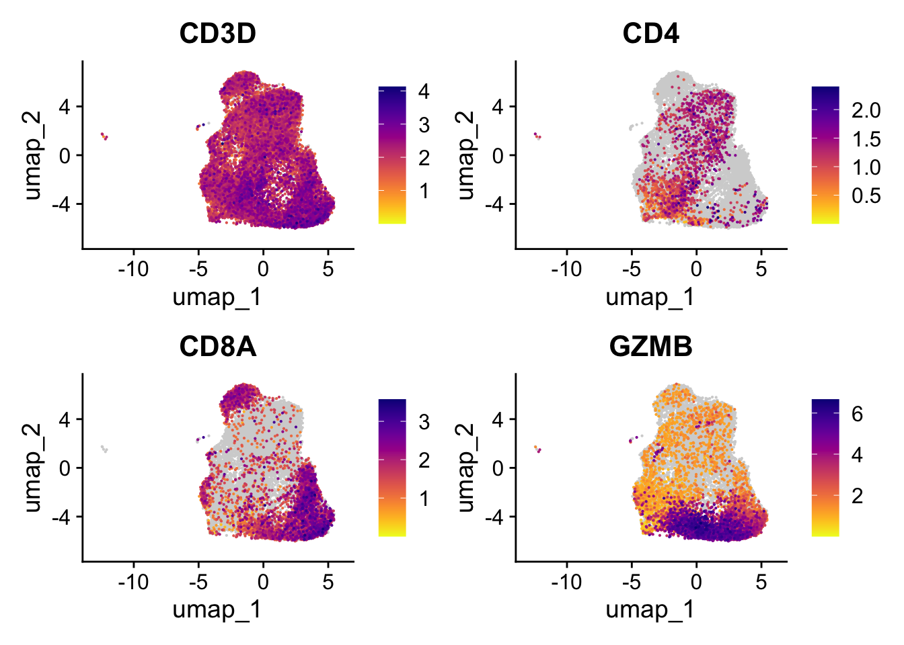
# For each expected cell type, create a combined plot
library(purrr)
walk(names(markers), function(cell_type) {
p <- FeaturePlot_scCustom(obj, features = markers[[cell_type]],
num_columns = 2)
ggsave(here(paste0("results/manual_annotation_", cell_type, ".pdf")),
p, width = 10, height = 8)
})What to look for: do multiple markers co-localize on the UMAP? Are markers mutually exclusive (CD4 vs CD8)? Do markers match cluster boundaries?
4.2.4 Create a manual annotation table
Based on what you see in the marker plots, here’s how I’d call each cluster:
| Cluster | Cell type | Evidence |
|---|---|---|
| 0 | Naive CD4 T | CCR7++, SELL++, TCF7++ |
| 1 | Effector CD8 T | NKG7++, PRF1++, GNLY++, CD8B+, KLRD1+ |
| 2 | Memory CD4 T | IL7R++, CD3E+ |
| 3 | Activated CD4 T | IL2RA+, similar CD4 profile to clusters 0/2 |
| 4 | Exhausted CD8 T | GZMB++, CD8A/B+, PDCD1+, CTLA4+ |
| 5 | Naive CD8 T | CD8B++, CD8A+, SELL+, CCR7+ |
| 6 | Treg | FOXP3++, TIGIT++, CTLA4++ |
| 7 | Activated CD8 T | ICOS++, CD69++ |
Your annotations might differ slightly – that’s fine. The point is that you can justify each call with specific markers. If you can’t point to a clear marker pattern, that’s a sign you need to dig deeper before labeling that cluster.
# Manual annotation based on marker inspection
manual_annotation <- c(
"0" = "Naive CD4 T",
"1" = "Effector CD8 T",
"2" = "Memory CD4 T",
"3" = "Activated CD4 T",
"4" = "Exhausted CD8 T",
"5" = "Naive CD8 T",
"6" = "Treg",
"7" = "Activated CD8 T"
)
# Add to metadata - unname() so Seurat doesn't mistake cluster IDs for cell names
obj$manual_annotation <- unname(manual_annotation[as.character(obj$seurat_clusters)])
# Visualize
DimPlot_scCustom(obj, group.by = "manual_annotation", label = TRUE)This is your baseline – the annotation you trust most because you understand the evidence.
4.3 Automated Annotation Methods
Now let’s compare three automated annotation tools and see how well they agree with each other.
4.4 Method 1: SingleR (Reference-based Classification)
4.4.1 Choosing a reference dataset
The most important decision in reference-based annotation is not the algorithm – it’s which reference you use. A poor reference will give you poor annotations, period.
Things to think about when choosing a reference:
Is the reference from the same tissue? A PBMC reference for PBMC data is great. A brain reference for PBMC data will give you nonsense. Same technology matters too – scRNA-seq references capture cell-to-cell variation, bulk RNA-seq from sorted populations gives you clean labels but averaged expression, and microarray data is older with different dynamic range.
Check the label quality. Read the paper. How were cells sorted or annotated? If you see labels like “Unknown” or “Mixed” that’s a red flag. Also think about granularity – does the reference include all the cell types you expect? Is it too coarse (just “T cells” when you want subtypes) or too fine (50 T cell subtypes when you have 5 clusters)?
And don’t forget sample quality. Were the reference samples healthy? Diseased samples have altered expression profiles.
When possible, use multiple references and compare. Disagreement between references tells you something – it means the annotation is uncertain (see the “Choosing References” chapter in the SingleR book).
4.4.2 Built-in references from celldex
The celldex package provides several curated references:
| Reference | Tissue | Source | Cell Types | Technology | Use Case |
|---|---|---|---|---|---|
HumanPrimaryCellAtlasData |
Multiple | Microarray | ~40 cell types | Microarray | Broad annotation across tissues |
BlueprintEncodeData |
Blood/immune | RNA-seq | ~24 immune types | Bulk RNA-seq | Immune cells |
MonacoImmuneData |
Blood | RNA-seq | 29 immune types | Bulk RNA-seq | Fine-grained immune |
DatabaseImmuneCellExpressionData |
Blood | Microarray | ~15 immune types | Microarray | Broad immune |
NovershternHematopoieticData |
Blood | Microarray | 38 hematopoietic | Microarray | Hematopoiesis |
For our PBMC data, HumanPrimaryCellAtlasData is a reasonable starting point (broad coverage), but MonacoImmuneData might give better resolution for immune subtypes.
4.4.3 Custom references
You can also use your own reference:
# Option 1: From a published dataset
published_ref <- readRDS("path/to/reference_seurat.rds")
ref_counts <- GetAssayData(published_ref, slot = "data")
ref_labels <- published_ref$cell_type
predictions <- SingleR(test = sce,
ref = ref_counts,
labels = ref_labels)
# Option 2: From sorted bulk RNA-seq
# Just need a matrix (genes × cell types) and cell type labels4.4.4 How SingleR works
Given a reference dataset with known labels, SingleR assigns labels to new cells based on expression similarity. The full tutorial is at https://bioconductor.org/books/devel/SingleRBook/
Here’s what happens under the hood: for each cell, SingleR calculates the Spearman correlation with all reference samples, using only informative marker genes. For each cell type, it takes the 80th percentile of those correlations as a score (this makes it robust to outliers). The cell gets assigned the label with the highest score.
There’s also a fine-tuning step (on by default) that narrows down to the top candidate labels and re-runs the comparison using only genes that distinguish those candidates. This helps when you have similar cell types.
Why Spearman correlation? It’s rank-based, so it handles batch effects and outliers better than Euclidean distance. It captures relative gene expression patterns and works well across technologies (scRNA-seq vs bulk).
library(Seurat)
library(scCustomize)
#if (!require("BiocManager", quietly = TRUE))
# install.packages("BiocManager")
#BiocManager::install("SingleR")
# BiocManager::install("celldex")
library(SingleR)
# This is our test dataset (we converted it from seurat object to a single cell Experiment object)
sce<- as.SingleCellExperiment(obj)
# Loading reference data with Ensembl annotations.
library(celldex)
library(tictoc)
ref.data <- HumanPrimaryCellAtlasData(ensembl=FALSE)
# Performing predictions.
tic()
predictions <- SingleR(test=sce, assay.type.test=1,
ref=ref.data, labels=ref.data$label.fine)
toc()#> 147.654 sec elapsedIt takes a couple of minutes.
#>
#> Monocyte:F._tularensis_novicida Neutrophil:uropathogenic_E._coli_UTI89
#> 5 1
#> NK_cell NK_cell:CD56hiCD62L+
#> 74 1
#> NK_cell:IL2 T_cell:CD4+
#> 413 35
#> T_cell:CD4+_central_memory T_cell:CD4+_effector_memory
#> 6950 2277
#> T_cell:CD4+_Naive T_cell:CD8+
#> 4807 3976
#> T_cell:CD8+_Central_memory T_cell:CD8+_effector_memory
#> 182 356
#> T_cell:CD8+_effector_memory_RA T_cell:CD8+_naive
#> 89 326
#> T_cell:gamma-delta T_cell:Treg:Naive
#> 293 20We know the authors used magnetic negative selection for CD3+ T cells to enrich for T cells, so most of them should be T cells. There are several cells that are labeled as monocytes and Neutrophil (1 cell), and there are some NK cells.
Add the cell type label back to the seurat object and clean up the label
by removing the T_cell prefix:
obj$label.fine<- predictions$labels %>%
stringr::str_remove("T_cell:")
# visualize it
scCustomize::DimPlot_scCustom(obj, group.by = "label.fine")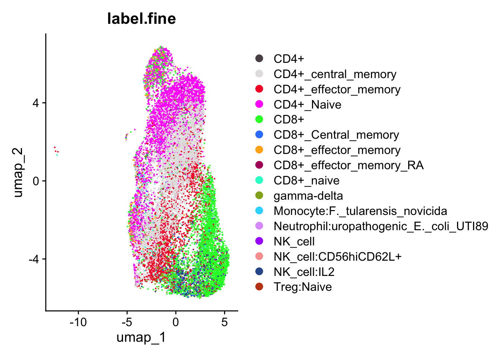
The choice of reference data significantly affects annotation results. It’s important to select a reference that includes all the cell types you expect in your test data. The accuracy of the labels in the reference is often assumed but can vary based on sample quality. Ideally, the reference should come from the same technology or protocol as your test dataset, although SingleR typically handles this well when working with clearly defined cell types.
The celldex package provides many references data to use. Read here to understand what are they.
It is also possible to supply your own reference datasets instead; all we need are log-expression values and a set of labels for the cells or samples.
4.5 clustifyr
clustifyr classifies cells and clusters in single-cell RNA sequencing experiments using reference bulk RNA-seq data sets, sorted microarray expression data, single-cell gene signatures, or lists of marker genes.
cbmc_ref is a built-in reference from the clustifyr package.
#> B CD14+ Mono CD16+ Mono CD34+ CD4 T CD8 T DC
#> HBG2 1.0668542 1.2467965 1.0253991 0.8255312 1.8326043 0.9197132 0.7472545
#> HBG1 0.6229441 0.6806011 0.5027230 0.3279704 1.0287977 0.4414419 0.3731538
#> HLA-DRA 4.4557101 3.5158415 3.9460809 2.8281458 0.5888103 0.6263067 5.1399543
#> HBB 1.2344033 1.2618246 1.1139648 1.0590386 1.5509602 1.1220094 0.9526003
#> CST3 0.8749894 3.8200168 4.1390693 0.9110207 0.5952362 0.5029664 4.8028800
#> HBA1 0.5977980 0.6828271 0.5212046 0.6053780 0.8527734 0.6276198 0.5770306
#> Eryth Memory CD4 T Mk Naive CD4 T NK pDCs
#> HBG2 7.773846 1.9084869 1.8112314 1.2249129 1.0757351 1.2169419
#> HBG1 6.641268 0.7866344 0.9108557 0.0000000 0.4894052 0.3303419
#> HLA-DRA 1.246415 0.8374923 2.7843088 1.0780054 1.7775188 4.0032714
#> HBB 6.778164 1.0323561 1.2770665 1.1445562 1.2446169 1.0468256
#> CST3 1.139385 0.8944152 3.1801271 1.8717717 1.9015339 3.2542873
#> HBA1 5.890259 1.1033004 1.4229252 0.8635658 0.6211324 0.5330750The reference broadly classifies CD4T, CD8T, B cell and the myeloid cells.
clustifyr can work directly with singleCellExpereiment or Seurat object
#BiocManager::install("rnabioco/clustifyr")
library(clustifyr)
obj_anno<- clustify(
input = obj,
cluster_col = "RNA_snn_res.0.4",
ref_mat = cbmc_ref,
seurat_out = TRUE
)The cell annotation will be in the column type.
#>
#> CD4 T CD8 T NK
#> 14775 1216 3814
Interestingly, clustifyr annotates large number of NK cells (almost 4000), which I do not think is right.
Again, the annotation results depends on the reference data used. Let’s use another reference data.
Similar to SingleR it has a companion package to download the references:
https://github.com/rnabioco/clustifyrdatahub
# BiocManager::install("clustifyrdatahub")
library(ExperimentHub)
eh <- ExperimentHub()
## query
refs <- query(eh, "clustifyrdatahub")
refs#> ExperimentHub with 11 records
#> # snapshotDate(): 2024-04-29
#> # $dataprovider: figshare, S3, GitHub, GEO, washington.edu, UCSC
#> # $species: Mus musculus, Homo sapiens
#> # $rdataclass: data.frame
#> # additional mcols(): taxonomyid, genome, description,
#> # coordinate_1_based, maintainer, rdatadateadded, preparerclass, tags,
#> # rdatapath, sourceurl, sourcetype
#> # retrieve records with, e.g., 'object[["EH3444"]]'
#>
#> title
#> EH3444 | ref_MCA
#> EH3445 | ref_tabula_muris_drop
#> EH3446 | ref_tabula_muris_facs
#> EH3447 | ref_mouse.rnaseq
#> EH3448 | ref_moca_main
#> ... ...
#> EH3450 | ref_hema_microarray
#> EH3451 | ref_cortex_dev
#> EH3452 | ref_pan_indrop
#> EH3453 | ref_pan_smartseq2
#> EH3779 | ref_mouse_atlasload the hema data
#> Basophils CD4+ Central Memory CD4+ Effector Memory CD8+ Central Memory
#> DDR1 6.084244 5.967502 5.933039 6.005278
#> RFC2 6.280044 6.028615 6.047005 5.992979
#> HSPA6 6.535444 5.811475 5.746326 5.928349
#> PAX8 6.669153 5.896401 6.118577 6.270870
#> GUCA1A 5.239230 5.232116 5.206960 5.227415
#> CD8+ Effector Memory CD8+ Effector Memory RA
#> DDR1 5.895926 6.068653
#> RFC2 5.942426 6.079630
#> HSPA6 5.942670 6.197062
#> PAX8 6.323922 6.106530
#> GUCA1A 5.090882 5.414058
#> Colony Forming Unit-Granulocyte Colony Forming Unit-Megakaryocytic
#> DDR1 6.133158 5.840055
#> RFC2 6.339621 6.223787
#> HSPA6 5.926671 6.118749
#> PAX8 5.548961 6.502735
#> GUCA1A 5.169354 5.203075
#> Colony Forming Unit-Monocyte Common myeloid progenitor Early B-cell
#> DDR1 5.884078 5.894468 6.391864
#> RFC2 6.484200 7.201365 6.508347
#> HSPA6 7.414021 6.047013 6.096143
#> PAX8 6.734008 6.835819 6.824184
#> GUCA1A 5.306772 5.257351 5.249690
#> Eosinophill Erythroid_CD34- CD71- GlyA+ Erythroid_CD34- CD71+ GlyA-
#> DDR1 5.855112 6.382039 6.078574
#> RFC2 6.228770 6.531500 6.738282
#> HSPA6 6.323991 6.409215 6.066397
#> PAX8 6.156168 6.028995 5.834061
#> GUCA1A 5.287988 5.597567 5.391699
#> Erythroid_CD34- CD71+ GlyA+ Erythroid_CD34- CD71lo GlyA+
#> DDR1 6.318064 6.213817
#> RFC2 6.320205 6.608802
#> HSPA6 6.228563 6.249870
#> PAX8 6.218115 6.535977
#> GUCA1A 5.612716 5.534305
#> Erythroid_CD34+ CD71+ GlyA- Granulocyte (Neutrophil)
#> DDR1 5.861679 5.833917
#> RFC2 6.969688 6.576916
#> HSPA6 5.882729 7.792118
#> PAX8 6.053497 5.704660
#> GUCA1A 5.283608 5.150294
#> Granulocyte (Neutrophilic Metamyelocyte) Granulocyte/monocyte progenitor
#> DDR1 5.833306 5.839079
#> RFC2 6.553904 6.767519
#> HSPA6 7.490526 6.661685
#> PAX8 5.632423 6.319374
#> GUCA1A 5.245884 5.220135
#> Hematopoietic stem cell_CD133+ CD34dim
#> DDR1 5.950970
#> RFC2 6.570751
#> HSPA6 5.733596
#> PAX8 5.878362
#> GUCA1A 5.274890
#> Hematopoietic stem cell_CD38- CD34+ Mature B-cell class able to switch
#> DDR1 5.885564 6.387991
#> RFC2 6.624798 6.218705
#> HSPA6 5.923514 6.890074
#> PAX8 5.670447 5.760565
#> GUCA1A 5.220075 5.272567
#> Mature B-cell class switched Mature B-cells
#> DDR1 6.583029 6.716107
#> RFC2 6.224177 6.447172
#> HSPA6 6.498508 6.413854
#> PAX8 5.846651 5.720587
#> GUCA1A 5.395569 5.389500
#> Mature NK cell_CD56- CD16- CD3- Mature NK cell_CD56- CD16+ CD3-
#> DDR1 5.787686 5.691603
#> RFC2 6.346118 6.345863
#> HSPA6 6.024851 8.741871
#> PAX8 6.460078 7.013351
#> GUCA1A 5.143572 5.176959
#> Mature NK cell_CD56+ CD16+ CD3- Megakaryocyte
#> DDR1 5.754366 5.987526
#> RFC2 6.652667 6.147594
#> HSPA6 6.561003 6.389242
#> PAX8 6.797919 6.522839
#> GUCA1A 5.119780 5.269424
#> Megakaryocyte/ erythroid progenitor Monocyte Myeloid Dendritic Cell
#> DDR1 5.741639 5.649500 5.881891
#> RFC2 6.669614 6.726144 6.274899
#> HSPA6 5.677596 8.205161 6.989158
#> PAX8 6.188238 6.112065 6.965479
#> GUCA1A 5.192397 5.064548 5.126334
#> Naïve B-cells Naive CD4+ T-cell Naive CD8+ T-cell NKT
#> DDR1 6.633327 6.199182 6.205459 5.918666
#> RFC2 6.380757 5.986070 5.822920 6.210981
#> HSPA6 5.996253 5.845853 5.650911 7.108207
#> PAX8 5.676502 5.907682 5.741445 7.447800
#> GUCA1A 5.249145 5.306274 5.243730 5.293263
#> Plasmacytoid Dendritic Cell Pro B-cell
#> DDR1 6.289158 6.092417
#> RFC2 6.428834 6.665571
#> HSPA6 6.189802 6.194375
#> PAX8 7.708575 6.816063
#> GUCA1A 5.358672 5.200036Let’s use this reference data instead:
obj_anno2<- clustify(
input = obj,
cluster_col = "RNA_snn_res.0.4",
ref_mat = ref_hema_microarray,
seurat_out = TRUE
)
table(obj_anno2$type)#>
#> CD4+ Effector Memory CD8+ Effector Memory
#> 12101 7704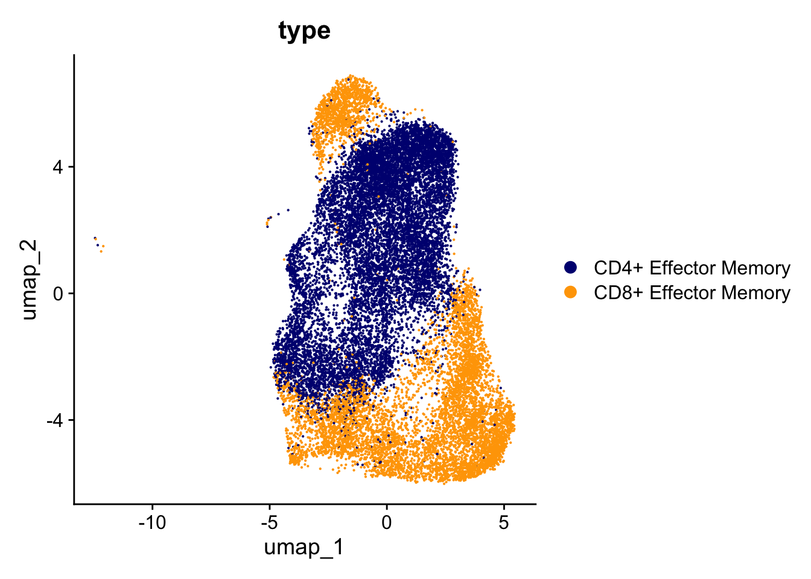
Using a different reference does not annotate any of them to be NK cells but only CD4 effector memory and CD8 effector memory cells.
There is no perfect annotation.
One thing I do notice is that clustify is super fast.
4.6 Seurat label transfer
We can download the Seurat reference datasets from Azimuth, click the PBMC Zenodo link and download the Ref.Rds file.
read here to understand the reference format.
Follow the Seurat tutorial here https://satijalab.org/seurat/articles/integration_mapping
I saved the file in the data folder.
#> An object of class Seurat
#> 5228 features across 36433 samples within 2 assays
#> Active assay: refAssay (5000 features, 0 variable features)
#> 1 layer present: data
#> 1 other assay present: ADT
#> 2 dimensional reductions calculated: refUMAP, refDR#> celltype.l1 celltype.l2 celltype.l3 ori.index
#> L1_AAACGAATCCTCACCA other T gdT gdT_3 27
#> L1_AAACGCTAGAGCATTA CD8 T CD8 TEM CD8 TEM_2 30
#> L1_AAACGCTCAACGATCT CD8 T CD8 TCM CD8 TCM_1 35
#> L1_AAACGCTGTGCTCGTG other T dnT dnT_2 40
#> L1_AAACGCTTCTTGGTCC B B intermediate B intermediate lambda 42
#> L1_AAAGAACCAAGCGGAT CD4 T CD4 TCM CD4 TCM_3 46
#> nCount_refAssay nFeature_refAssay
#> L1_AAACGAATCCTCACCA 0 0
#> L1_AAACGCTAGAGCATTA 0 0
#> L1_AAACGCTCAACGATCT 0 0
#> L1_AAACGCTGTGCTCGTG 0 0
#> L1_AAACGCTTCTTGGTCC 0 0
#> L1_AAAGAACCAAGCGGAT 0 0The reference data has different levels of cell type labels: l1, l2 and l3.
Level 2 split the CD4 T and CD8 T cells into different subtypes.
#>
#> ASDC B intermediate B memory B naive
#> 16 899 597 903
#> CD14 Mono CD16 Mono CD4 CTL CD4 Naive
#> 3673 891 296 1403
#> CD4 Proliferating CD4 TCM CD4 TEM CD8 Naive
#> 57 14889 703 1148
#> CD8 Proliferating CD8 TCM CD8 TEM cDC1
#> 31 2883 1796 150
#> cDC2 dnT Eryth gdT
#> 472 181 81 835
#> HSPC ILC MAIT NK
#> 300 131 600 1546
#> NK Proliferating NK_CD56bright pDC Plasmablast
#> 214 291 284 299
#> Platelet Treg
#> 566 298Let’s take a look at the reference dataset.
DimPlot(object = pbmc_ref, group.by = "celltype.l2", label = TRUE,
label.size = 3, repel = TRUE) +
NoLegend()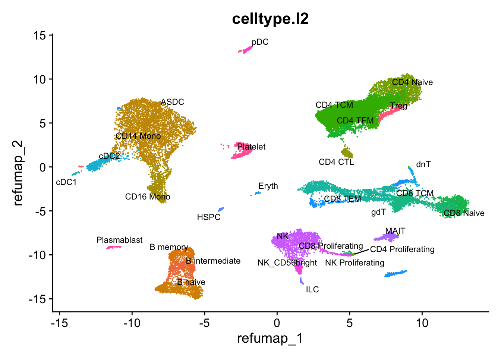
It has different subsets of CD4, CD8 T cells, NK cells, B cells and myeloid cells (mono/mac and DCs).
#> $refUMAP
#> A dimensional reduction object with key refumap_
#> Number of dimensions: 2
#> Number of cells: 36433
#> Projected dimensional reduction calculated: FALSE
#> Jackstraw run: FALSE
#> Computed using assay: SCT
#>
#> $refDR
#> A dimensional reduction object with key refdr_
#> Number of dimensions: 50
#> Number of cells: 36433
#> Projected dimensional reduction calculated: FALSE
#> Jackstraw run: FALSE
#> Computed using assay: refAssayThe reference was normalized using SCTransform(), so we use the same approach to normalize the query here.
options(future.globals.maxSize = 5000 * 1024^2) # Increases the limit to 5000 MB
obj<- SCTransform(obj)In data transfer, Seurat has an option (set by default) to project the PCA structure of a reference onto the query, instead of learning a joint structure with CCA. We generally suggest using this option when projecting data between scRNA-seq datasets.
Note CCA is usually very slow and memory consuming. It is used for integration of multiple datasets.
# Note, the reference.reduction is refDR as shown above
pbmc.anchors <- FindTransferAnchors(reference = pbmc_ref,
query = obj,
dims = 1:30,
reference.reduction = "refDR",
features = rownames(pbmc_ref))#> Error in validObject(object = object): invalid class "DimReduc" object: colnames for 'feature.loadings' must start with reduction key (refdr_)you will get an error:
Error in validObject(object = object) :
invalid class “DimReduc” object: colnames for ‘feature.loadings’ must start with reduction key (refdr_)Let’s take a look at the feature loading for the reference data
#> SPC_1 SPC_2 SPC_3 SPC_4 SPC_5
#> S100A9 0.17540890 0.024747662 0.05308178 -0.04386096 -0.16856850
#> GNLY -0.05647381 0.188930102 0.06556480 0.18797505 -0.03838351
#> S100A8 0.15265061 0.028741117 0.05248713 -0.05241097 -0.21712741
#> LYZ 0.20067079 0.009777434 0.04840629 -0.02495563 -0.11889120
#> IGKC -0.01963733 -0.112227604 -0.03628639 0.10893277 -0.06541687
#> NKG7 -0.06220261 0.199491164 0.06975626 0.19380036 -0.03093830
#> SPC_6 SPC_7 SPC_8 SPC_9 SPC_10
#> S100A9 -0.009620442 0.01787194 -0.007563838 0.009727894 -0.032765709
#> GNLY -0.011889564 -0.03625577 0.016350917 0.052509848 -0.032806499
#> S100A8 -0.010353481 0.03921075 -0.001564466 0.014827246 -0.048900561
#> LYZ 0.086924287 -0.15152238 -0.052590841 0.030525629 0.005253401
#> IGKC -0.015615128 0.09104649 0.005555978 -0.027420239 -0.025492024
#> NKG7 -0.011939178 -0.04455563 0.003521557 -0.018778907 -0.064454282
#> SPC_11 SPC_12 SPC_13 SPC_14 SPC_15
#> S100A9 -0.014060699 -0.013562042 0.009035644 0.028764150 0.003734663
#> GNLY 0.012471531 0.013059518 -0.025834026 -0.023061118 -0.018519609
#> S100A8 -0.024376365 -0.017540021 0.009337801 0.024542528 -0.011095065
#> LYZ 0.007633657 -0.016600545 0.025757894 0.018292670 0.040434463
#> IGKC 0.006231834 0.058322881 0.012749794 0.010292865 0.043666314
#> NKG7 0.060658313 -0.003873595 -0.079017025 0.009355687 -0.029615429
#> SPC_16 SPC_17 SPC_18 SPC_19 SPC_20
#> S100A9 -0.06832236 0.018532635 -0.0330525231 0.001169086 0.062500636
#> GNLY -0.03578241 -0.196766012 -0.2270024941 0.168089377 -0.103248147
#> S100A8 -0.03330613 0.009308634 -0.0250494076 -0.013167967 0.029261985
#> LYZ -0.04453965 0.019200375 0.0127292332 -0.002276017 0.005643646
#> IGKC -0.01911311 -0.024809200 0.0004316597 0.024890596 0.029753094
#> NKG7 -0.01596618 -0.037122589 -0.0451064418 0.056866155 -0.011216713
#> SPC_21 SPC_22 SPC_23 SPC_24 SPC_25
#> S100A9 -0.0040679790 0.0107787400 -0.02229157 -0.034981512 0.07033714
#> GNLY 0.1735320215 -0.0005878844 0.05293453 0.087768030 0.13903340
#> S100A8 0.0001864844 0.0061391432 -0.01625055 -0.024285749 0.06154046
#> LYZ -0.0110590103 0.0020625142 0.03836255 0.069328614 -0.02580749
#> IGKC -0.0211730707 -0.5504117138 -0.03315757 0.018247114 0.05500481
#> NKG7 0.1548609500 -0.0082109623 -0.09363333 -0.008293414 -0.02671991
#> SPC_26 SPC_27 SPC_28 SPC_29 SPC_30
#> S100A9 -0.001107902 -0.001132793 0.0007047881 0.027658625 0.001194392
#> GNLY 0.021093473 -0.017380719 0.0907164128 -0.112745310 0.050332229
#> S100A8 0.003914621 -0.013557549 -0.0513550451 0.003888556 -0.005332480
#> LYZ -0.007732018 0.019689608 -0.0003352259 -0.039488246 0.007117379
#> IGKC -0.018744459 0.077274377 -0.0039275780 -0.016416399 0.006222635
#> NKG7 -0.061762393 0.004760341 -0.0828432360 0.086827252 -0.026442595
#> SPC_31 SPC_32 SPC_33 SPC_34 SPC_35
#> S100A9 -0.027763258 -0.011833178 0.03024119 0.056030234 -0.11839809
#> GNLY -0.046912685 0.048614143 -0.08934106 0.093177381 0.07692647
#> S100A8 -0.038696862 -0.008222512 0.04469981 0.055762136 -0.12704391
#> LYZ 0.052203053 -0.014911128 -0.03442142 0.034581495 -0.07255828
#> IGKC 0.006300713 -0.012290828 0.01058911 0.012987003 -0.03370489
#> NKG7 0.128453737 -0.039872676 0.03263848 -0.004891762 -0.01543087
#> SPC_36 SPC_37 SPC_38 SPC_39 SPC_40
#> S100A9 -0.002900716 0.07641366 -0.085872474 -0.031060393 -0.018935179
#> GNLY -0.119070091 0.09971409 0.004483365 -0.009185792 -0.039971202
#> S100A8 -0.025488856 0.09754433 -0.065571376 -0.034492469 -0.031485604
#> LYZ -0.006641142 0.02982453 -0.031114001 0.034221824 0.009257663
#> IGKC 0.005523306 0.01986347 -0.005962094 0.038239297 0.029223444
#> NKG7 0.044408244 0.04566426 -0.043270818 0.030254752 0.014833099
#> SPC_41 SPC_42 SPC_43 SPC_44 SPC_45
#> S100A9 0.003970465 -0.014028208 -0.0637622129 0.064425921 -0.043576692
#> GNLY -0.033580040 -0.053091516 0.0283453040 -0.001397313 -0.131978942
#> S100A8 0.015783887 -0.001720793 -0.0343491581 0.062912564 -0.056712214
#> LYZ 0.045086630 -0.048945009 -0.0141393372 0.040874733 -0.002686919
#> IGKC 0.014494110 -0.033980554 -0.0002369874 -0.009944878 -0.016609254
#> NKG7 -0.011388292 -0.080229205 0.0155926279 -0.012435703 -0.005424014
#> SPC_46 SPC_47 SPC_48 SPC_49 SPC_50
#> S100A9 0.06821003 0.026420929 -0.03709120 0.09290078 -0.03323632
#> GNLY 0.13537960 -0.145628324 0.14618998 0.19283590 0.05026448
#> S100A8 0.05815011 0.031927477 -0.04791208 0.07993712 -0.05271768
#> LYZ 0.04162346 -0.002208263 -0.01349858 0.04022010 -0.03471571
#> IGKC 0.03234522 0.019037766 -0.03168980 0.05895159 -0.02018643
#> NKG7 -0.02877707 0.065795945 0.01027477 0.01193532 0.01831374The column names are prefixed with SPC. we need to fix them to prefix with refdr.
#> [1] "SPC_1" "SPC_2" "SPC_3" "SPC_4" "SPC_5" "SPC_6" "SPC_7" "SPC_8"
#> [9] "SPC_9" "SPC_10" "SPC_11" "SPC_12" "SPC_13" "SPC_14" "SPC_15" "SPC_16"
#> [17] "SPC_17" "SPC_18" "SPC_19" "SPC_20" "SPC_21" "SPC_22" "SPC_23" "SPC_24"
#> [25] "SPC_25" "SPC_26" "SPC_27" "SPC_28" "SPC_29" "SPC_30" "SPC_31" "SPC_32"
#> [33] "SPC_33" "SPC_34" "SPC_35" "SPC_36" "SPC_37" "SPC_38" "SPC_39" "SPC_40"
#> [41] "SPC_41" "SPC_42" "SPC_43" "SPC_44" "SPC_45" "SPC_46" "SPC_47" "SPC_48"
#> [49] "SPC_49" "SPC_50"colnames(pbmc_ref@reductions$refDR@feature.loadings)<- stringr::str_replace(colnames(pbmc_ref@reductions$refDR@feature.loadings),
"SPC", "refdr")
colnames(pbmc_ref@reductions$refDR@feature.loadings)#> [1] "refdr_1" "refdr_2" "refdr_3" "refdr_4" "refdr_5" "refdr_6"
#> [7] "refdr_7" "refdr_8" "refdr_9" "refdr_10" "refdr_11" "refdr_12"
#> [13] "refdr_13" "refdr_14" "refdr_15" "refdr_16" "refdr_17" "refdr_18"
#> [19] "refdr_19" "refdr_20" "refdr_21" "refdr_22" "refdr_23" "refdr_24"
#> [25] "refdr_25" "refdr_26" "refdr_27" "refdr_28" "refdr_29" "refdr_30"
#> [31] "refdr_31" "refdr_32" "refdr_33" "refdr_34" "refdr_35" "refdr_36"
#> [37] "refdr_37" "refdr_38" "refdr_39" "refdr_40" "refdr_41" "refdr_42"
#> [43] "refdr_43" "refdr_44" "refdr_45" "refdr_46" "refdr_47" "refdr_48"
#> [49] "refdr_49" "refdr_50"rerun the same FindTransferAnchors command:
pbmc.anchors <- FindTransferAnchors(reference = pbmc_ref,
query = obj,
dims = 1:30,
reference.reduction = "refDR",
features = rownames(pbmc_ref))Now, there is no error. and we can do the prediction.
Once you’ve identified the common “anchors” (similarities between the datasets), TransferData uses those anchors to project or transfer information from one dataset to the other. This could mean transferring cell labels, gene expression values, or other information from a well-annotated reference dataset to a new dataset. Essentially, you’re using the information from one dataset to annotate the other.
It’s like once you’ve aligned the maps using anchors, you can now fill in missing details on one map using information from the other.
After finding anchors, we use the TransferData() function to classify the query cells based on reference data (a vector of reference cell type labels). TransferData() returns a matrix with predicted IDs and prediction scores, which we can add to the query metadata by AddMetaData.
Differences Between PCA and CCA in These Functions:
PCA: When used, Seurat is primarily focusing on the variation within each dataset separately and then comparing how those variations align between the two datasets. It works well when the datasets are from similar technologies or not too dissimilar.
CCA: When used, Seurat specifically looks at how features are correlated across the datasets, finding patterns that exist between them. This method is more powerful for aligning datasets from different technologies or when the datasets vary a lot.
Bonus, what is CCA? and what’s difference between CCA and PCA? read this post https://xinmingtu.cn/blog/2022/CCA_dual_PCA/
Let’s visualize the predicted cell type in our query dataset:
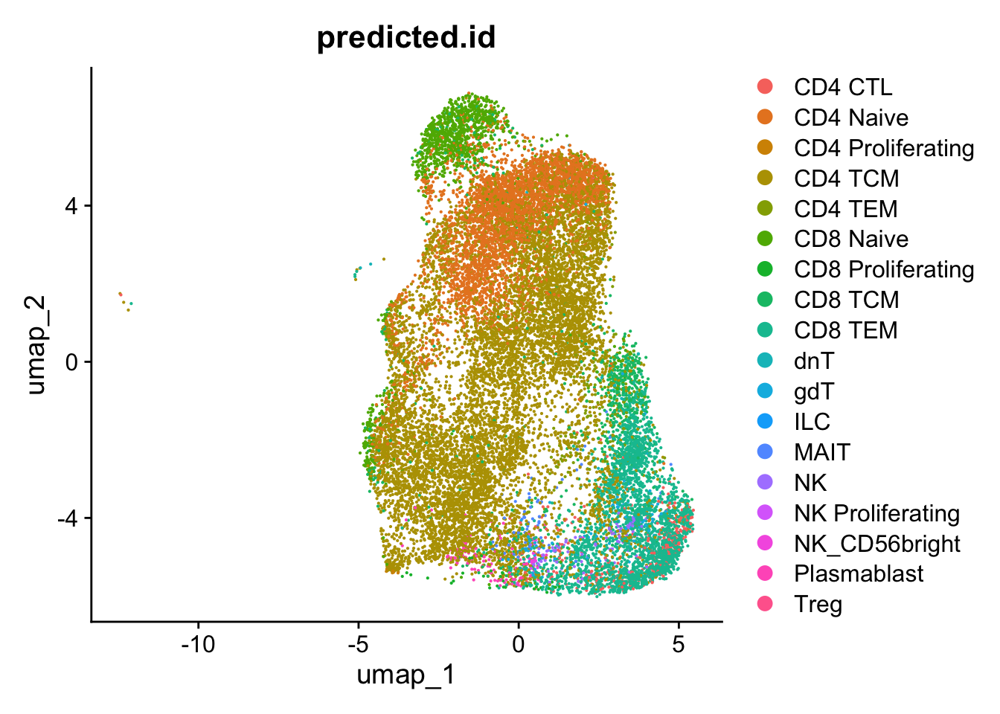
#>
#> CD4 CTL CD4 Naive CD4 Proliferating CD4 TCM
#> 367 3823 14 10439
#> CD4 TEM CD8 Naive CD8 Proliferating CD8 TCM
#> 199 1208 47 753
#> CD8 TEM dnT gdT ILC
#> 2504 16 104 1
#> MAIT NK NK Proliferating NK_CD56bright
#> 61 117 2 25
#> Plasmablast Treg
#> 123 2There are a few NK cells which may be contamination from the column purification.
Note, you can also follow the multimodal annotation at https://satijalab.org/seurat/articles/multimodal_reference_mapping.html
4.7 Comparing Annotation Methods
We’ve now run three different annotation methods on the same data. How do we decide which to trust? The short answer: when methods agree, you can be more confident. When they disagree, dig deeper.
4.7.1 Create a comparison table
Let’s organize all annotations in one dataframe:
library(dplyr)
library(tidyr)
# Extract annotations from our three methods
annotation_comparison <- tibble(
cell_id = colnames(obj),
cluster = obj$seurat_clusters,
manual = obj$manual_annotation, # From our manual marker-based annotation
singleR = obj$label.fine, # From SingleR
clustifyr_cbmc = obj_anno$type, # From clustifyr with cbmc_ref
clustifyr_hema = obj_anno2$type, # From clustifyr with hema reference
seurat = obj$predicted.id # From Seurat label transfer
)
head(annotation_comparison)#> # A tibble: 6 × 7
#> cell_id cluster manual singleR clustifyr_cbmc clustifyr_hema seurat
#> <chr> <fct> <chr> <chr> <chr> <chr> <chr>
#> 1 SRX5329394_GTACTT… 4 Exhau… CD4+_c… CD4 T CD8+ Effector… CD4 T…
#> 2 SRX5329394_CTGATA… 4 Exhau… CD4+_c… CD4 T CD8+ Effector… CD4 T…
#> 3 SRX5329394_TGTGGT… 4 Exhau… CD4+_e… CD4 T CD8+ Effector… Plasm…
#> 4 SRX5329394_CGGAGT… 4 Exhau… CD4+_e… CD4 T CD8+ Effector… CD4 T…
#> 5 SRX5329394_GCGACC… 3 Activ… CD4+_c… CD4 T CD4+ Effector… CD4 T…
#> 6 SRX5329394_GACCTG… 4 Exhau… CD4+_e… CD4 T CD8+ Effector… CD4 P…4.7.2 Calculate agreement
For each cluster, what’s the consensus? now, we just check if they are concordant at high-level (CD4T vs CD8T). but in real work, you would check the more granulized annotaiton.
You get the idea
consensus <- annotation_comparison %>%
group_by(cluster) %>%
summarize(
n_cells = n(),
manual = names(which.max(table(manual)))[1],
singleR = names(which.max(table(singleR)))[1],
clustifyr_cbmc = names(which.max(table(clustifyr_cbmc)))[1],
clustifyr_hema = names(which.max(table(clustifyr_hema)))[1],
seurat = names(which.max(table(seurat)))[1],
# Calculate agreement score (how many methods agree with manual?)
agreement = mean(c(
grepl("CD4|CD8", singleR) == grepl("CD4|CD8", manual),
grepl("CD4|CD8", clustifyr_cbmc) == grepl("CD4|CD8", manual),
grepl("CD4|CD8", seurat) == grepl("CD4|CD8", manual)
))
)
print(consensus)#> # A tibble: 8 × 8
#> cluster n_cells manual singleR clustifyr_cbmc clustifyr_hema seurat agreement
#> <fct> <int> <chr> <chr> <chr> <chr> <chr> <dbl>
#> 1 0 4519 Naive … CD4+_N… CD4 T CD4+ Effector… CD4 N… 1
#> 2 1 3814 Effect… CD8+ NK CD8+ Effector… CD8 T… 0.667
#> 3 2 3541 Memory… CD4+_c… CD4 T CD4+ Effector… CD4 T… 1
#> 4 3 3170 Activa… CD4+_c… CD4 T CD4+ Effector… CD4 T… 1
#> 5 4 2674 Exhaus… CD4+_e… CD4 T CD8+ Effector… CD4 T… 1
#> 6 5 1216 Naive … CD4+_N… CD8 T CD8+ Effector… CD8 N… 1
#> 7 6 490 Treg CD4+_c… CD4 T CD4+ Effector… CD4 T… 0
#> 8 7 381 Activa… CD4+_c… CD4 T CD4+ Effector… CD4 T… 14.7.3 Visualize side by side
Create side-by-side UMAPs to visually compare methods:
p1 <- DimPlot_scCustom(obj, group.by = "manual_annotation", label = TRUE) +
ggtitle("Manual (Marker-based)")
p2 <- DimPlot_scCustom(obj, group.by = "label.fine", label = TRUE) +
ggtitle("SingleR")
p3 <- DimPlot_scCustom(obj_anno, group.by = "type", label = TRUE) +
ggtitle("clustifyr")
p4 <- DimPlot_scCustom(obj, group.by = "predicted.id", label = TRUE) +
ggtitle("Seurat Transfer")
p1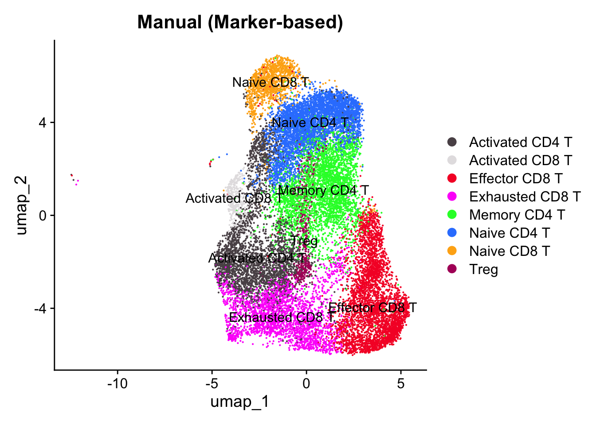
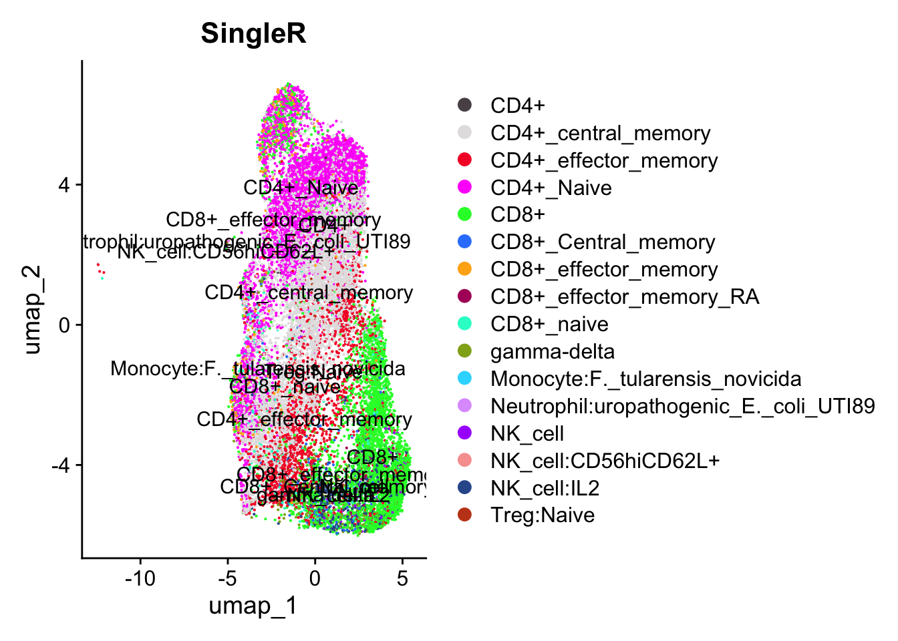
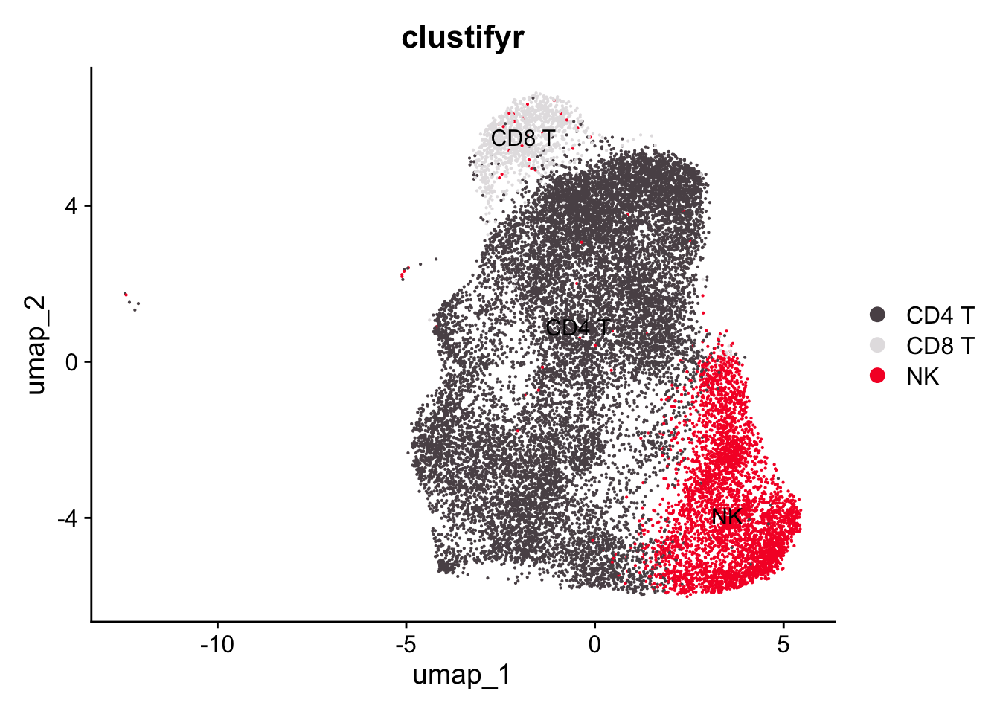
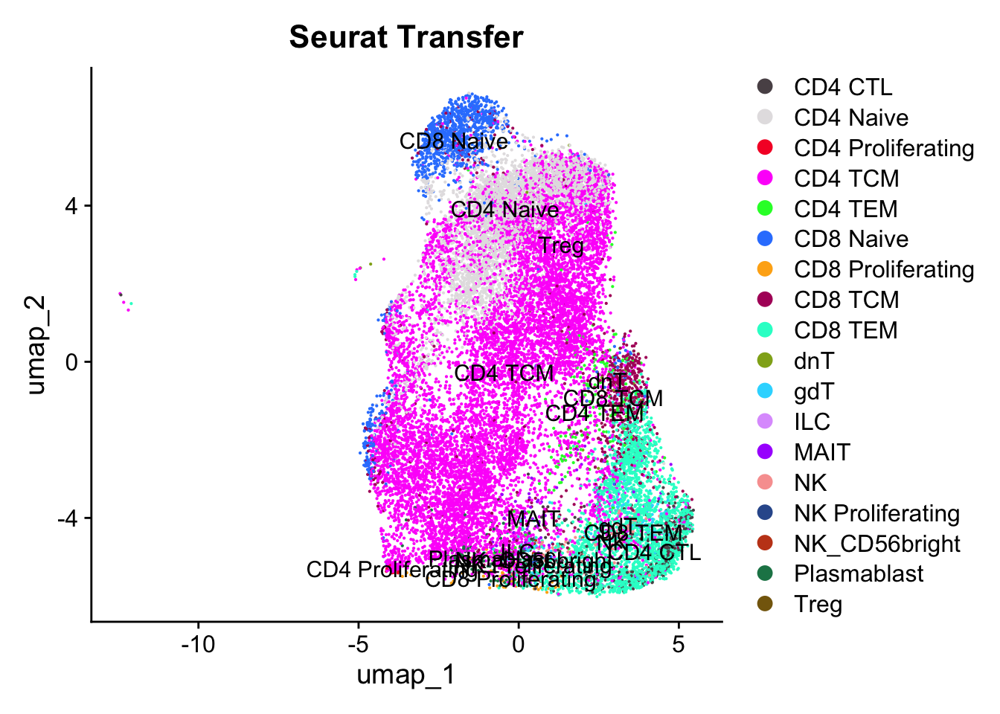
4.7.4 Investigate discrepancies
When methods disagree, dig deeper:
# Find cells with conflicting annotations
conflicting_cells <- annotation_comparison %>%
filter(
# Example: SingleR says CD4 but Seurat says CD8
(grepl("CD4", singleR) & grepl("CD8", seurat)) |
(grepl("CD8", singleR) & grepl("CD4", seurat))
)
# What clusters are these?
table(conflicting_cells$cluster)#>
#> 0 1 2 3 4 5 6 7
#> 116 759 156 257 356 636 20 74# Visualize marker genes for these cells
subset_obj <- obj[, conflicting_cells$cell_id]
FeaturePlot_scCustom(subset_obj, features = c("CD4", "CD8A", "CD8B"))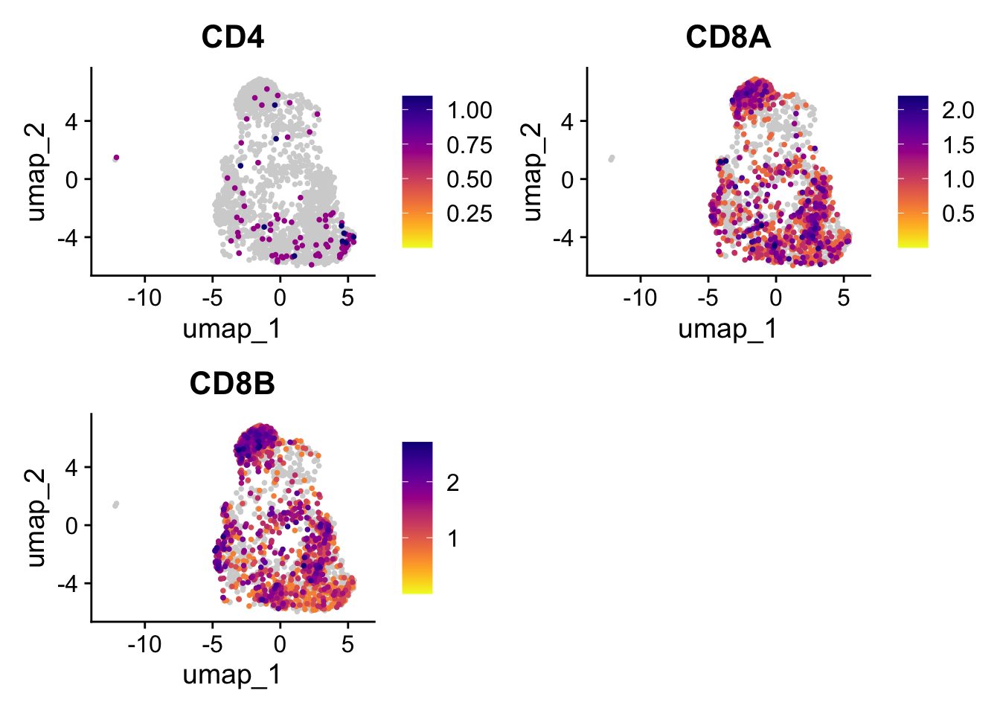
Most of the cells express high CD8A and CD8B. Also I noticed that in single-cell RNAseq data, CD4 mRNA expression level is low in CD4 T cells. It could be just the biology. I know the CD4 protein is high in CD4 T cells according to CITE-seq data.Similiarily, NK cell marker CD56/NCAM mRNA is usually not that high in NK cells but it is high at the protein level.
How to think about it: if your manual annotation agrees with the automated methods, great – high confidence. If automated methods disagree with each other, trust your manual inspection because you understand the biology and technical artifacts. If all automated methods agree but your manual call is unclear, go back and review the markers again. And if a rare population only shows up in one method, validate it with marker genes before you trust it.
4.7.5 Make a final annotation decision
# Create final annotation by combining methods
obj$final_annotation <- case_when(
# When manual and Seurat agree, use that
obj$manual_annotation == obj$predicted.id ~ obj$manual_annotation,
# When manual is confident (based on clear markers), trust it
obj$seurat_clusters %in% c(0, 1, 2) ~ obj$manual_annotation,
# For ambiguous clusters, defer to Seurat (best reference)
TRUE ~ obj$predicted.id
)
# Visualize final annotation
DimPlot_scCustom(obj, group.by = "final_annotation", label = TRUE) +
ggtitle("Final Annotation (Consensus)")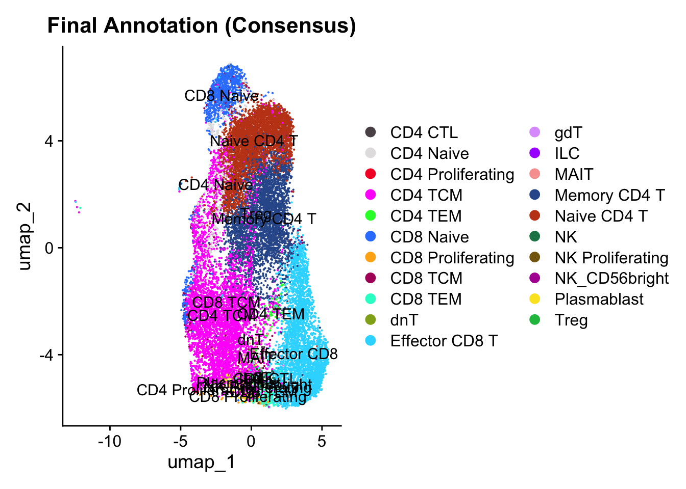
4.7.6 Method comparison
| Method | Speed | Pros | Cons | Best For |
|---|---|---|---|---|
| Manual | Slow | Transparent, most trustworthy | Subjective, requires expertise | Validation, novel cell types |
| SingleR | Fast | Easy, many references | Reference-dependent | Quick exploration |
| clustifyr | Very fast | Ultra-fast, flexible | Limited references | Large datasets, need speed |
| Seurat | Medium | Hierarchical labels, integrates well | Slow, needs good reference | Final annotation, multi-level |
Which approach to use depends on your situation. For well-studied tissues like PBMCs or brain, Seurat label transfer with Azimuth references works well – just validate with manual markers. For poorly-studied tissues, you really need to start with manual annotation. Don’t trust automated methods blindly when good references don’t exist.
If you have 100k+ cells and need to explore quickly, clustifyr is your friend. For publication-quality annotations, run all three methods, report where they agree and disagree, and validate with independent evidence (flow cytometry, immunofluorescence) if you can.
Always report which annotation method you used and which reference. Annotation is subjective – transparency is critical (sc-best-practices.org makes this point well).
4.8 Deeper Understanding of the Anchor Finding and Label Transfer Step
Read this tutorial by me https://crazyhottommy.github.io/single-cell-RNAseq-PCA-CCA-cell-annotation/ It self can be a whole chapter here. But I will leave it to you if you want to understand the math behind PCA projection and CCA data integration.
4.9 Other Annotation Approaches
4.9.1 Marker-based tools
If you have high-quality marker gene lists for your tissue, these are worth trying:
- scGate – marker-based purification where you define positive/negative markers
- ProjectTILs – specialized for tumor-infiltrating lymphocytes
- easybio – newer marker-based tool (2024)
- scType – marker gene scoring approach
The nice thing about these is that the annotation is transparent – you know exactly which markers drove the decision.
4.10 Things to watch out for
A few mistakes I see people make repeatedly:
Don’t trust one method blindly. Run multiple approaches and compare. And don’t use an inappropriate reference – a PBMC reference for brain data will give you nonsense results.
Be careful about over-interpreting fine-grained labels. “CD4 Effector Memory RA+” might be more specific than your noisy scRNA-seq data can support. Check prediction.score.max from Seurat – low scores mean the algorithm itself isn’t confident.
Always report which annotation method and reference you used. This sounds obvious but a surprising number of papers don’t do it.
Remember that cell types are not always discrete. Biology is continuous. Some cells are genuinely intermediate or transitional, and that’s okay. And if you see a cluster that no method annotates well, don’t just force a label on it – it might be a novel cell state worth investigating.
In the next chapter, we’ll use these cell type annotations for gene set enrichment analysis.
4.10.1 Further reading
Official documentation:
- SingleR book: https://bioconductor.org/books/devel/SingleRBook/
- clustifyr: https://rnabioco.github.io/clustifyr/
- Seurat label transfer: https://satijalab.org/seurat/articles/integration_mapping.html
- Azimuth: https://azimuth.hubmapconsortium.org/
Best practices guides:
- sc-best-practices.org, Annotation chapter: https://www.sc-best-practices.org/cellular_structure/annotation.html
- OSCA book, Cell Type Annotation: https://bioconductor.org/books/release/OSCA.basic/cell-type-annotation.html
Key papers:
- Abdelaal et al. (2019) – benchmarks 22 annotation methods, a good overview of what’s out there
- Aran et al. (2019) – the SingleR paper
- Fu et al. (2020) – the clustifyr paper
- Stuart et al. (2019) – “Comprehensive Integration of Single-Cell Data” (Seurat anchors)
Reference databases:
- celldex: https://bioconductor.org/packages/celldex/
- PanglaoDB: https://panglaodb.se/
- CellMarker: http://biocc.hrbmu.edu.cn/CellMarker/
- Human Protein Atlas: https://www.proteinatlas.org/
The bottom line: there is no perfect annotation. Use multiple methods, validate with markers, report what you did, and remember that the goal is biological insight, not perfect labels. When in doubt, talk to your collaborators who know the biology.
Session Information
#> R version 4.4.1 (2024-06-14)
#> Platform: aarch64-apple-darwin20
#> Running under: macOS Sonoma 14.1
#>
#> Matrix products: default
#> BLAS: /Library/Frameworks/R.framework/Versions/4.4-arm64/Resources/lib/libRblas.0.dylib
#> LAPACK: /Library/Frameworks/R.framework/Versions/4.4-arm64/Resources/lib/libRlapack.dylib; LAPACK version 3.12.0
#>
#> locale:
#> [1] en_US.UTF-8/en_US.UTF-8/en_US.UTF-8/C/en_US.UTF-8/en_US.UTF-8
#>
#> time zone: America/New_York
#> tzcode source: internal
#>
#> attached base packages:
#> [1] grid stats4 stats graphics grDevices utils datasets
#> [8] methods base
#>
#> other attached packages:
#> [1] tidyr_1.3.1 clustifyrdatahub_1.14.0
#> [3] ExperimentHub_2.12.0 AnnotationHub_3.12.0
#> [5] BiocFileCache_2.12.0 dbplyr_2.5.0
#> [7] clustifyr_1.17.2 tictoc_1.2.1
#> [9] celldex_1.14.0 SingleR_2.6.0
#> [11] DESeq2_1.44.0 celda_1.20.0
#> [13] Matrix_1.7-0 scDblFinder_1.18.0
#> [15] genefilter_1.86.0 ComplexHeatmap_2.20.0
#> [17] scCustomize_2.1.2 harmony_1.2.0
#> [19] Rcpp_1.0.13 DropletUtils_1.24.0
#> [21] stringr_1.5.1 ggplot2_3.5.1
#> [23] dplyr_1.1.4 here_1.0.1
#> [25] Seurat_5.1.0 SeuratObject_5.0.2
#> [27] sp_2.1-4 SingleCellExperiment_1.26.0
#> [29] SummarizedExperiment_1.34.0 Biobase_2.64.0
#> [31] GenomicRanges_1.56.1 GenomeInfoDb_1.40.1
#> [33] IRanges_2.38.1 S4Vectors_0.42.1
#> [35] BiocGenerics_0.50.0 MatrixGenerics_1.16.0
#> [37] matrixStats_1.3.0
#>
#> loaded via a namespace (and not attached):
#> [1] R.methodsS3_1.8.2 goftest_1.2-3
#> [3] Biostrings_2.72.1 HDF5Array_1.32.1
#> [5] vctrs_0.6.5 spatstat.random_3.3-1
#> [7] digest_0.6.36 png_0.1-8
#> [9] shape_1.4.6.1 gypsum_1.0.1
#> [11] ggrepel_0.9.5 deldir_2.0-4
#> [13] parallelly_1.38.0 combinat_0.0-8
#> [15] MASS_7.3-60.2 reshape2_1.4.4
#> [17] httpuv_1.6.15 foreach_1.5.2
#> [19] withr_3.0.0 ggrastr_1.0.2
#> [21] xfun_0.52 survival_3.6-4
#> [23] memoise_2.0.1 ggbeeswarm_0.7.2
#> [25] janitor_2.2.0 zoo_1.8-12
#> [27] GlobalOptions_0.1.2 entropy_1.3.1
#> [29] pbapply_1.7-2 R.oo_1.26.0
#> [31] rematch2_2.1.2 KEGGREST_1.44.1
#> [33] promises_1.3.0 httr_1.4.7
#> [35] restfulr_0.0.15 globals_0.16.3
#> [37] fitdistrplus_1.2-1 rhdf5filters_1.16.0
#> [39] rhdf5_2.48.0 rstudioapi_0.16.0
#> [41] UCSC.utils_1.0.0 miniUI_0.1.1.1
#> [43] generics_0.1.3 curl_5.2.1
#> [45] zlibbioc_1.50.0 ScaledMatrix_1.12.0
#> [47] polyclip_1.10-7 GenomeInfoDbData_1.2.12
#> [49] SparseArray_1.4.8 RcppEigen_0.3.4.0.1
#> [51] xtable_1.8-4 doParallel_1.0.17
#> [53] evaluate_0.24.0 S4Arrays_1.4.1
#> [55] bookdown_0.40 irlba_2.3.5.1
#> [57] colorspace_2.1-1 filelock_1.0.3
#> [59] ROCR_1.0-11 reticulate_1.38.0
#> [61] spatstat.data_3.1-2 magrittr_2.0.3
#> [63] lmtest_0.9-40 snakecase_0.11.1
#> [65] later_1.3.2 viridis_0.6.5
#> [67] lattice_0.22-6 spatstat.geom_3.3-2
#> [69] future.apply_1.11.2 scattermore_1.2
#> [71] XML_3.99-0.17 scuttle_1.14.0
#> [73] cowplot_1.1.3 RcppAnnoy_0.0.22
#> [75] pillar_1.9.0 nlme_3.1-164
#> [77] iterators_1.0.14 compiler_4.4.1
#> [79] beachmat_2.20.0 RSpectra_0.16-2
#> [81] stringi_1.8.4 tensor_1.5
#> [83] lubridate_1.9.3 GenomicAlignments_1.40.0
#> [85] MCMCprecision_0.4.0 plyr_1.8.9
#> [87] crayon_1.5.3 abind_1.4-5
#> [89] BiocIO_1.14.0 scater_1.32.1
#> [91] locfit_1.5-9.10 bit_4.0.5
#> [93] fastmatch_1.1-4 codetools_0.2-20
#> [95] BiocSingular_1.20.0 bslib_0.8.0
#> [97] alabaster.ranges_1.4.2 paletteer_1.6.0
#> [99] GetoptLong_1.0.5 plotly_4.10.4
#> [101] mime_0.12 splines_4.4.1
#> [103] circlize_0.4.16 fastDummies_1.7.4
#> [105] sparseMatrixStats_1.16.0 prismatic_1.1.2
#> [107] knitr_1.48 blob_1.2.4
#> [109] utf8_1.2.4 clue_0.3-65
#> [111] BiocVersion_3.19.1 WriteXLS_6.7.0
#> [113] listenv_0.9.1 DelayedMatrixStats_1.26.0
#> [115] tibble_3.2.1 statmod_1.5.0
#> [117] pkgconfig_2.0.3 tools_4.4.1
#> [119] cachem_1.1.0 RSQLite_2.3.7
#> [121] viridisLite_0.4.2 DBI_1.2.3
#> [123] fastmap_1.2.0 rmarkdown_2.27
#> [125] scales_1.3.0 ica_1.0-3
#> [127] Rsamtools_2.20.0 sass_0.4.9
#> [129] patchwork_1.2.0 ggprism_1.0.5
#> [131] BiocManager_1.30.24 dotCall64_1.1-1
#> [133] RANN_2.6.1 alabaster.schemas_1.4.0
#> [135] farver_2.1.2 yaml_2.3.10
#> [137] rtracklayer_1.64.0 cli_3.6.3
#> [139] purrr_1.0.2 leiden_0.4.3.1
#> [141] lifecycle_1.0.4 uwot_0.2.2
#> [143] bluster_1.14.0 BiocParallel_1.38.0
#> [145] annotate_1.82.0 timechange_0.3.0
#> [147] gtable_0.3.5 rjson_0.2.22
#> [149] ggridges_0.5.6 progressr_0.14.0
#> [151] parallel_4.4.1 limma_3.60.4
#> [153] jsonlite_1.8.8 edgeR_4.2.1
#> [155] RcppHNSW_0.6.0 bitops_1.0-8
#> [157] bit64_4.0.5 xgboost_1.7.8.1
#> [159] Rtsne_0.17 alabaster.matrix_1.4.2
#> [161] spatstat.utils_3.1-0 BiocNeighbors_1.22.0
#> [163] highr_0.11 alabaster.se_1.4.1
#> [165] jquerylib_0.1.4 metapod_1.12.0
#> [167] dqrng_0.4.1 enrichR_3.2
#> [169] spatstat.univar_3.0-0 R.utils_2.12.3
#> [171] lazyeval_0.2.2 alabaster.base_1.4.2
#> [173] shiny_1.9.0 htmltools_0.5.8.1
#> [175] sctransform_0.4.1 rappdirs_0.3.3
#> [177] glue_1.8.0 spam_2.10-0
#> [179] httr2_1.0.2 XVector_0.44.0
#> [181] RCurl_1.98-1.16 rprojroot_2.0.4
#> [183] scran_1.32.0 gridExtra_2.3
#> [185] igraph_2.0.3 R6_2.5.1
#> [187] labeling_0.4.3 forcats_1.0.0
#> [189] cluster_2.1.6 Rhdf5lib_1.26.0
#> [191] DelayedArray_0.30.1 tidyselect_1.2.1
#> [193] vipor_0.4.7 AnnotationDbi_1.66.0
#> [195] future_1.34.0 rsvd_1.0.5
#> [197] munsell_0.5.1 KernSmooth_2.23-24
#> [199] data.table_1.15.4 fgsea_1.30.0
#> [201] htmlwidgets_1.6.4 RColorBrewer_1.1-3
#> [203] rlang_1.1.4 spatstat.sparse_3.1-0
#> [205] spatstat.explore_3.3-2 fansi_1.0.6
#> [207] beeswarm_0.4.0